《基督圣体》是一部很有冲击力的作品。
差一点就拿下了第92届奥斯卡最佳国际影片。
这是一部典型的波兰电影。
清冷压抑，看似节制却极富戏剧冲突和爆发力。
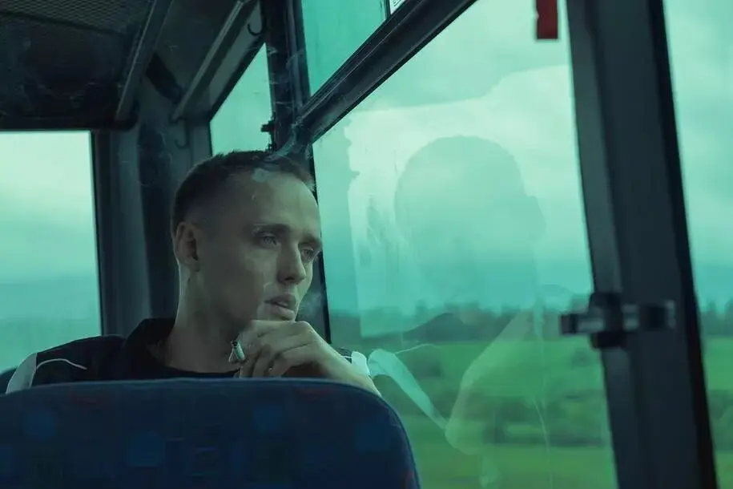
电影中的主角叫托马斯。
他是一个无药可救的坏小子。
抢劫店铺、打架斗殴、吸毒滥交，甚至因为杀了人而被关进了青年管教所。
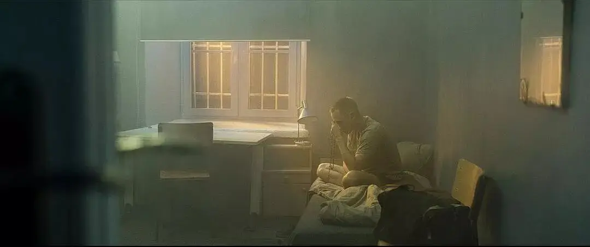
可就是这么一个人，他会因为监狱布道而流泪，能够发自肺腑地唱出赞美诗，还会在监狱里流泪祷告。
甚至，他向监狱神父提出请求，想要去读神学，成为一名神父。
这遭到了神父的拒绝。
神父告诉托马斯：没有哪个神学院会接受你这样的一个罪犯！
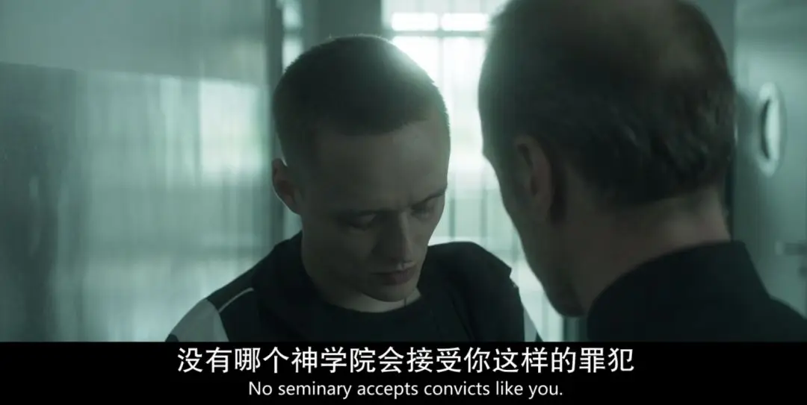
不久之后，托马斯被分配到一个锯木厂工作。
阴差阳错之下，他冒充成为了一名神父。
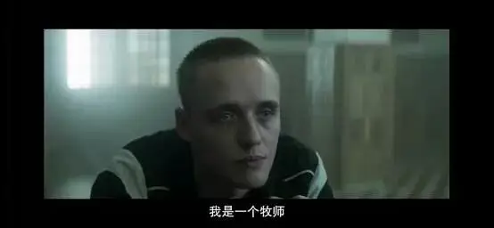
为了不露馅，他一边听人告解，一边在手机上查阅如何给人告解。
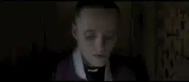
可就是这么一个骗子，却在镇上引起了轰动，甚至救赎了别人......
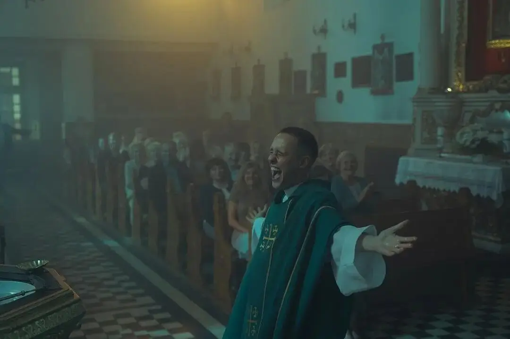
-01- 两种亵渎
光是我上面的介绍，我想很多人已经感觉有些不舒服。
这部电影的确在很多地方上充满了亵渎。
滥交的场面、暴力的拳头、糜烂的生活、迷离的表情。
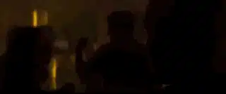
这些不体面的罪恶，怎么配和神圣的祭坛放在一起。
确实，这些罪恶很深，很可怕。
但是如果你看过这部电影，你就会发现，这部电影里有另一种更可怕的罪恶。
一种更加体面的亵渎。
这种体面的亵渎说的通俗一点，就是灯下黑。
比如镇上的老神父陷入酗酒无法自拔，但对外却一副道貌岸然的样子。
一个女信徒向托马斯告解认罪，因为她出手打了爱吸烟的儿子。
可托马斯却闻到了她身上浓浓的烟味。
托马斯问她，你只是这一次殴打么，还是经常性的殴打呢。
那女人沉默不语。
神圣的告解成为了他们自欺欺人的工具。
还有更多人，上帝挂在口边更多是出于习惯和形式。
他们总是冷冰冰地以信仰之名来拒绝别人和真实的自己。
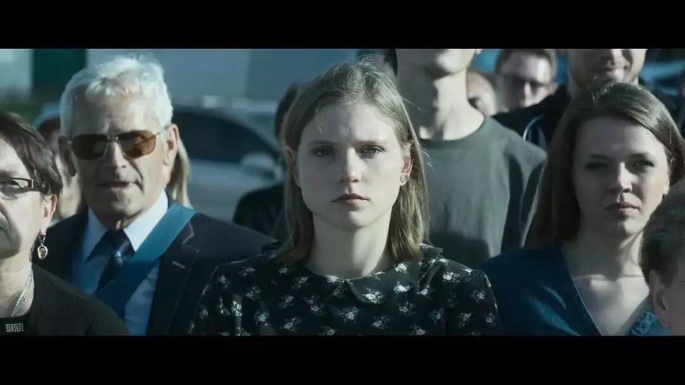
这两种亵渎。
一种暴露在阳光之下，人人得而诛之。
另一种却以一种眼不能见的方式藏在“信仰”的面具之下。
反反复复、暗中发酵，形成了深不见底的宗教虚伪和属灵黑暗！
这是事实，只能面对，不能回避。
-02- 我们与信仰的距离
两类亵渎者，他们都需要救赎。
托马斯似的罪恶像是小儿子，桀骜不驯，不撞南墙不回头。
可一旦他们撞到了南墙，他们回转的速度会更快，回转的力量也会更强。
因为，他们不曾虚伪过，也更懂得掉入罪恶深渊的痛苦和挣扎。
所以，他们坏的时候是彻彻底底，要变好的时候也会非常坚决。
托马斯就像是行淫时被抓的妇人，他要走向救赎，需要的是被爱和饶恕。
另一种体面的亵渎者是大多数人的常态。
这种状态像是大儿子，他们早早地学会了用信仰来约束自己，不至于自己行错踏差。
他们在理智上会有很多道德标准。
但是这些道德标准往往是难以企及的。
最后，不知不觉中，他们会成为律法主义者，甚至会变成法利赛人。
不懂神性，也不懂人性。
他们与信仰的距离，甚至要比托马斯更远。
因为他们已经忘记了真实的人性，失去了生命的热忱和操练的勇气。
所以，托马斯的出现会给他们带来极大的震撼。
当那个女人一边告解一边撒谎时，托马斯没有道德主义地安慰，而是直接戳穿了她的谎言。
当时，女人虽然长时间沉默，但是她哭了。
估计在教堂里，她已经很长时间没有听到真话了。
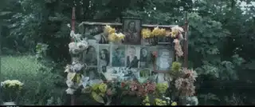
在托马斯来到小镇之前，小镇发生了一个惨案，八人因此丧命。
他们的家属压抑着内心的痛苦和疑问。
一边说这是上帝的旨意，一边故作镇静地祈祷。
托马斯知道他们很痛苦，很想帮助他们。
所以，当他带领祷告时，托马斯向上帝真实地表达了困惑和悲伤。
这让受害者的家属深受安慰。
接着，托马斯说：
“让我们把手伸向祈祷不能到达的地方，思想不能到达的地方.....呼气 、吸气时，因为我们想念他们，让我们把手伸向让我们窒息的东西吧，伸向那些阻止我们的喊叫和哭泣的东西”
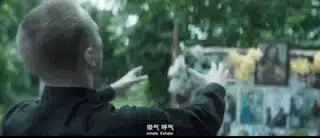
就这样，大家一直压抑的情感终于得到释放。
托马斯其实并没有做什么特别的事，他只是以正常人的理解和爱来对待小镇上的人，但却触及到了很多人内心深处的柔软。
这就是真实的力量。
信仰的奥秘在于其十足的人性里有十足的神性。
如果无视人性里的真实，忽视自己内心真实的情感，那么信仰会很干枯和虚假。
电影最后的告别弥撒上。
托马斯内心很复杂，不知道说什么。
当他转身看到盯着十字架上赤身露体的耶稣时，托马斯非常感动。
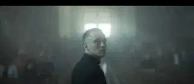
他将自己的上衣脱下，慢慢地走出教堂。
托马斯身上的纹身、伤疤，都展现在众人的面前。
这就是托马斯从耶稣圣像里得到的启示。
毋需虚伪，毋需隐瞒，赤身露体，将真实的自己带到上帝的面前。
此情此景，教会里的会众不禁感动流泪。
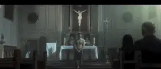
毕竟已经太长时间，没有见到一个弟兄愿意如此敞开。
确实，如果弟兄姐妹们之间，只能假正经地讨论属灵大话，却无法互相敞开真实的自己。
那么，我们距离真实的信仰还很远。
电影最后，托马斯回到青年管教所，他不得不再一次攥紧拳头以求活命。
这是导演丢给教会的一个挑战。
托马斯可以帮助小镇上的人走近信仰，但是小镇上的人和监狱神父却拒绝了他。
导演在向我们叩问，小儿子愿意回转，但是愿意效法耶稣，可以给他拥抱愿意接纳他的人在哪里？
-END-
推荐阅读
▼
（点击图片即可获取全文）
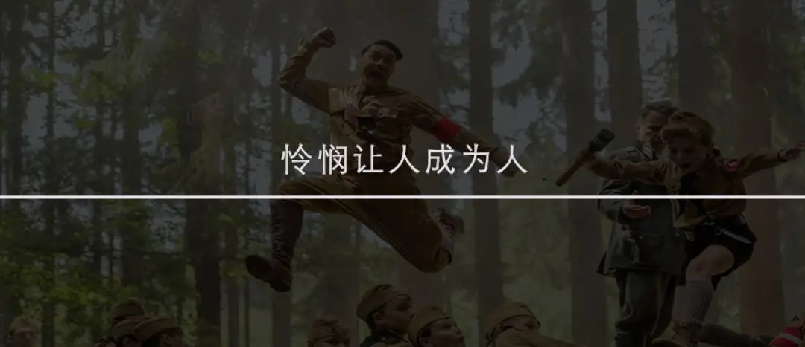
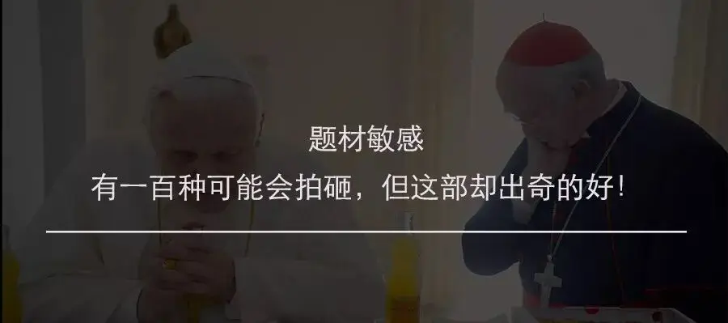
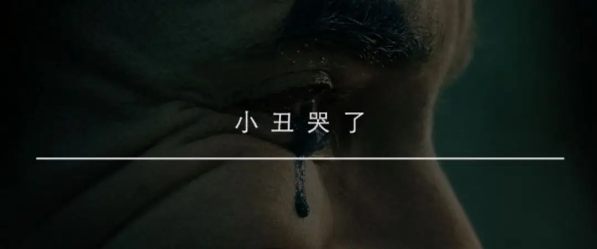


这里没有挑逗你眼目情欲的小鲜肉
也没有挑动你肉体情欲的段子
更没有膨胀你今生骄傲的鸡血
我们只在乎那些最质朴真诚的作品
在那里我们才能恢复真正的想象力
我们也坚信这才是我们真正需要的

ID:Six_hundred_hits
长按二维码，一键关注
【六百击】
电影评论
尽情分享朋友圈

微信二维码打赏通道
特别提醒：文中图片来自网络，版权归原作者所有，如有侵权请立即与我们联系,我们将及时删除。